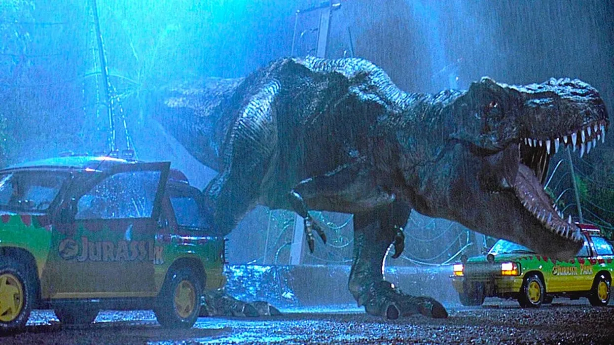
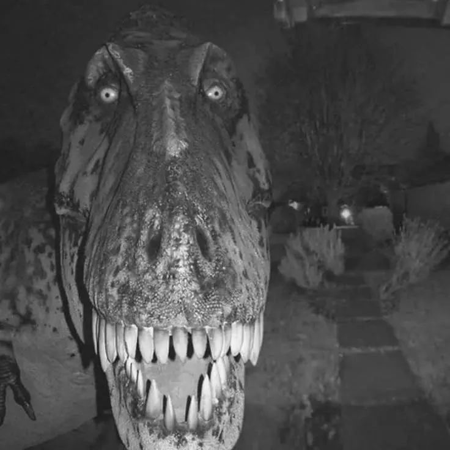
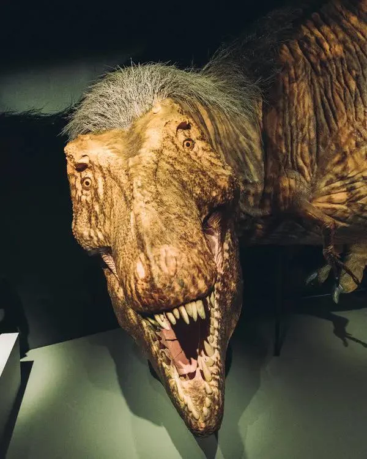
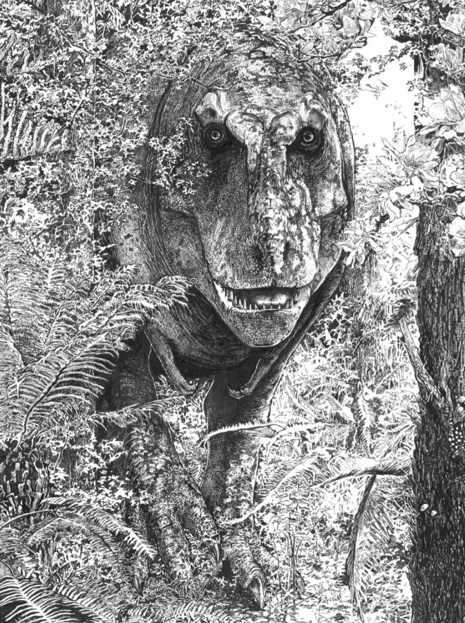

일반적으로 많이 알려진 쥬라기공원 티라노의 모습
나름 무섭게보이려보 날카롭고 파충류에 가깝게 디자인됐는데
사람들이 무서워하는 모습은 따로있다고



특히 마지막 그림은 트위터에서 무섭다고 12만 좋아요가 박힘

일반적으로 많이 알려진 쥬라기공원 티라노의 모습
나름 무섭게보이려보 날카롭고 파충류에 가깝게 디자인됐는데
사람들이 무서워하는 모습은 따로있다고



특히 마지막 그림은 트위터에서 무섭다고 12만 좋아요가 박힘
살벌은한대 구도가 집안에서 보는거같아 뭔가 안심임
눈이 이미지에 정말 중요한 일을 하는구나
눈이 하트면 더 무서울거같아
와.. 진짜 눈으로 '널 죽여버릴거야~' 라고 말한다는게 이런건가 싶네 ㄷㄷ
와 대가리에 털달린 게 존나 무섭네
3번째이미지 눈좁쌀만큼작아서 날보는건지아닌지 무섭다..ㅋㅋ
티라노가 다른 육식공룡들과 달리 무서운점이 저거임
정면을 똑바로 볼수 있음
k2로 안구쪽에 집중사격 하면 되겠지??
곰도 각도 제대로 안맞으면 박히는 것보다 튕겨 나가는게 많다고 하는데
저만한 새끼면 K2가 아니라 201이 필요하지 않을까 유탄발사기로 눈깔에 명중하면 그건 뒤질듯
동물들 머리통이 유선형이라 총알 다 도탄남 ㅋㅋ 심장, 폐 뚫는게 국룰이지
티라노가 다른 육식 공룡보다 복원이 쉬웠던 이유는 화석으로 발견된 개체수가 많고
그 개체수가 많은 이유가 바로 저 정면을 보는 쌍안시야 때문이라고 들음.
인간처럼 정면을 양 눈으로 정확히 바라보게 되면서
다른 개체보다 우월하게 거리와 깊이를 파악하는 능력을 지녀서 생존에 유리했다 함
팩트) 티라노 화석은 조각까지 다 합져도 전세계에 100개도 안된다. 티라노 개체수가 많은 것처럼 느껴지는 이유는 그냥 유명해서다.
오 정정 고마워 개붕아. 언젠가 인터넷에서 주워들은 얘기로 정확하지가 않았는데 감사요
펭귄도 정면 사진 보면 개 무서움
막짤 뭔가 멋있으면서 무섭긴하다
대가리 털달린 사진은 중대에 한명씩은 있음직해서 더 공포임ㅋㅋㅋㅋ
정면이 뭔가 인간 얼굴 비슷한 느낌도 있어보여..... 특히 마지막 그림
진짜 다른 데에 절대 한눈 안 팔고 나만 조지러 올 거 같네ㅋㅋ
범고래눈 같네;
보고있어요
다카이치 총리 닮았네 ㅋㅋ
Dna 하나부터 열까지 날 잡아 죽이려고 잘 디자인된거 같아 무서움. 첫번째 사진은 그런게 안느껴지고
털달린건 보자마자 소름 쫙 돋네
호랑이도 오줌지리게 생겼네ㅋㅋㅋㅋㅋ
이토준지 키큰 모델여자 같네
티라노 고기는 닭고기맛일까
저만한 새끼가 전방주시 가능한 눈깔 가지고 있으면 바로 오줌싸지
타겟이 나잖아 ㅅㅂ
와.. 뭔가.. 바미기르 느낌인데
근데 실제 공룡은 빠르고 날렵했을것같음
그래봤자 매그넘 한방이면....
아니 두방이면...
자살용이지? ㅋㅋ
M2 기관총 하나면...
알라봉!
저런게 쿵쾅대면서 끄요오오오오하면서 쫒아온다고? ㅅㅂ?
저런애도 총이면 꼼짝 못해
육식동물이라 눈이 정면바라보는게 맞겠지ㄷㄷ
세번째는 털도 희한하게 붙어서 더 무섭네;;
간파베기 마렵네
시벌 오줌 싼거같아요...
다라이 살벌하네
마지막은 이토 준지 그 식인모델 느낌인데
와 정면이 살벌하네 ㅋㅋ